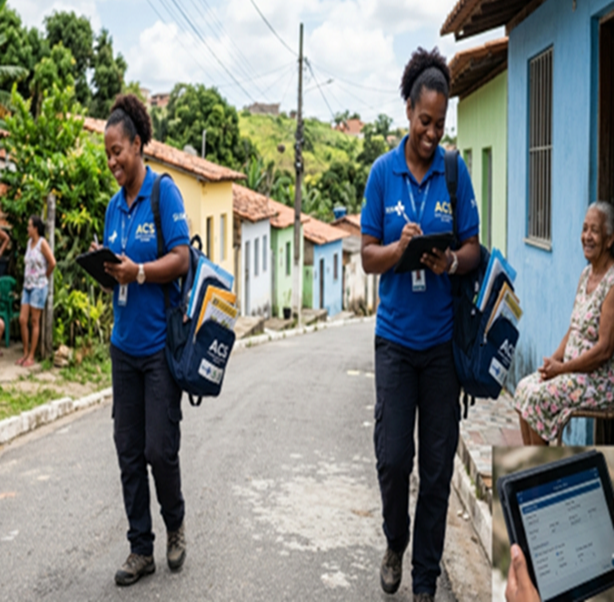

O Seven Sys é uma plataforma desenvolvida para modernizar e otimizar a rotina do Agente Comunitário de Saúde (ACS). Transformando o trabalho em um processo digital ágil e eficiente.
Unimos tecnologia com a realidade das comunidades para oferecer uma solução com inteligência e cuidado.
